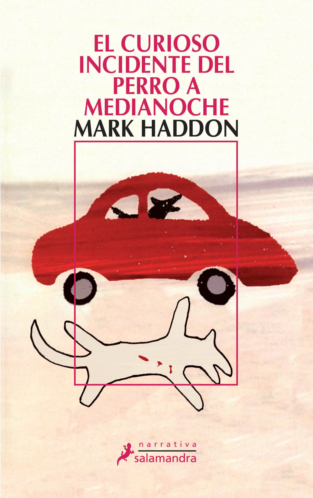

Los archivos secretos de la Sra. Basil E. Frankweiler
Su narrativa se centra principalmente en la intriga del caso de Claudia, quien junto a su hermano Jamie decide abandonar su casa con el objetivo de lograr que sus padres comiencen a valorarlos. Una vez que ellos logran fugarse, será en el Museo Metropolitano donde comenzará su aventura.

El curioso incidente del perro a medianocheo
Christopher Boone, de solo quince años, vive con su padre. No tiene madre, ya ha fallecido. Es un buen estudiante y posee una excelente destreza en las matemáticas. Además, ostenta una retentiva extraordinaria.
Las seis decisiones más importantes de tu vida
En esta obra literaria se enmarcan una serie de responsabilidades que trasladan al lector a los sentimientos de los protagonistas. Ellos siempre han vivido bajo la autoridad de sus padres.